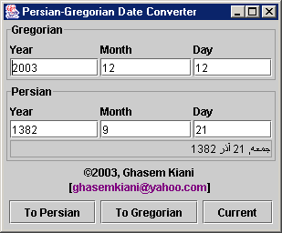
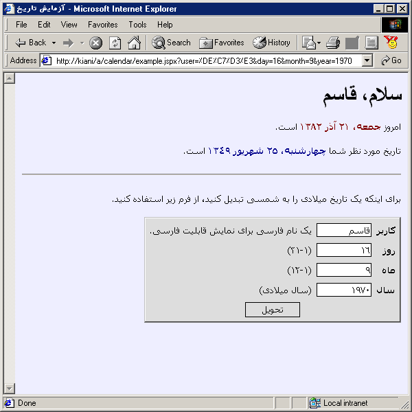

You need Java plugin for this applet. A screenshot of this applet is shown below. Clicking on the picture will take you to the applet page proper.
You must execute run.bat from the demo directory. Here is a screenshot of this application.

I have tested the sample JSP page, example.jspx, which is included in the demo directory, with Jakarta Tomcat version 5.0.6. A screenshot of the result is seen below.
